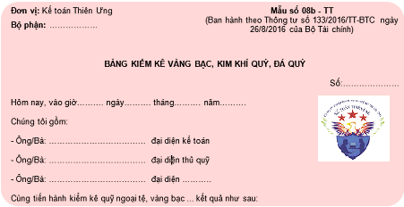

Bảng kiểm kê vàng bạc đá quý mẫu 08b–TT theo Thông tư 200 và 133. Nhằm xác nhận tiền ngoại tệ, vàng bạc, kim khí quý, đá quý, ... tồn thực tế và số thừa, thiếu so với sổ kế toán trên cơ sở đó tăng cường quản lý ngoại tệ, vàng bạc, kim khí quý, đá quý và làm cơ sở qui trách nhiệm vật chất, ghi sổ kế toán số chênh lệch.
1. Mẫu bảng kiểm kê vang bạc đá quý theo Thông tư 133:
|
Đơn vị: Kế toán Diệu Tâm Bộ phận: ……………… |
Mẫu số 08b - TT (Ban hành theo Thông tư số 133/2016/TT-BTC ngày 26/8/2016 của Bộ Tài chính) |
BẢNG KIỂM KÊ VÀNG BẠC, KIM KHÍ QUÝ, ĐÁ QUÝ
Số:…………………
Hôm nay, vào giờ………. ngày………. tháng………. năm……….
Chúng tôi gồm:
- Ông/Bà: ……………………………… đại diện kế toán
- Ông/Bà: ……………………………… đại diện thủ quỹ
- Ông/Bà: ……………………………… đại diện ………..
Cùng tiến hành kiểm kê quỹ ngoại tệ, vàng bạc ... kết quả như sau:
| Số TT | Diễn giải | Đơn vị tính | Số lượng | Đơn giá | Tính ra VNĐ | Ghi chú | |
| Tỷ giá | VNĐ | ||||||
| A | B | C | 1 | 2 | 3 | 4 | D |
|
I II 1 2 3 III |
Số dư theo sổ kế toán Số kiểm kê thực tế (*) - Loại - Loại - … Chênh lệch (III = I - II) |
x x …… …… …… x |
x x …… …… …… x |
…… …… …… …… …… …… |
…… …… …… …… …… …… |
…… …… …… …… …… …… |
…… …… …… …… …… …… |
- Lý do : + Thừa: ……………...…………..…………..
+ Thiếu: …………..…………..………..…………..……………
- Kết luận sau khi kiểm kê ngoại tệ, vàng bạc, kim khí quý, đá quý: …………..……
…………..…………..…………..…………..………….
|
Thủ quỹ (Ký, họ tên) |
Kế toán trưởng (Ký, họ tên) |
Người chịu trách nhiệm kiểm kê quỹ (Ký, họ tên) |
Tải mẫu Bảng kiểm kê vàng bạc đá quý theo Thông tư 133:
2. Mẫu bảng kiểm kê vàng bạc đá quý theo Thông tư 200:
Tải mẫu Bảng kiểm kê vàng bạc đá quý theo Thông tư 200:
Trường hợp các bạn không tải về được thì có thể làm theo cách sau:
Bước 1: Để lại mail ở phần bình luận bên dưới
Bước 2: Gửi yêu cầu vào mail: ketoandieutam@gmail.com (Tiêu đề ghi rõ Mẫu chứng từ muốn tải)
3. Cách lập Bảng kiểm kê vàng bạc đá quý kim khí quý:
Góc trên bên trái ghi tên đơn vị, bộ phận. Việc kiểm kê ngoại tệ, vàng bạc, kim khí quý, đá quý được tiến hành định kỳ vào cuối tháng, cuối quí, cuối năm hoặc khi cần thiết có thể kiểm kê đột xuất hoặc khi bàn giao ngoại tệ, vàng bạc, kim khí quý, đá quý. Khi tiến hành kiểm kê phải lập ban kiểm kê, trong đó, thủ quỹ hoặc người quản lý ngoại tệ, vàng bạc, kim khí quý, đá quý và kế toán hàng tồn kho (vàng bạc, kim khí quý, đá quý là hàng tồn kho) hoặc kế toán đầu tư khác (vàng bạc, kim khí quý, đá quý không phải là hàng tồn kho) là các thành viên.
Biên bản kiểm kê quỹ phải ghi rõ số hiệu chứng từ và thời điểm kiểm kê (...giờ ....ngày ....tháng ....năm ....). Trước khi kiểm kê ngoại tệ, vàng bạc, kim khí quý, đá quý, thủ quỹ hoặc người có trách nhiệm quản lý vàng bạc, kim khí quý, đá quý phải ghi sổ tất cả các chứng từ kế toán và tính số dư tồn ngoại tệ, vàng bạc, kim khí quý, đá quý đến thời điểm kiểm kê.
- Khi tiến hành kiểm kê phải tiến hành kiểm kê riêng từng loại ngoại tệ, vàng bạc, kim khí quý, đá quý hiện có như: ngoại tệ, vàng bạc, kim khí quý, đá quý.
- Dòng “Số dư theo sổ kế toán”: Căn cứ vào sổ quỹ của thủ quỹ hoặc sổ theo dõi chi tiết hàng tồn kho, đầu tư khác tại ngày, giờ kiểm kê quỹ để ghi vào cột 2, 4.
- Dòng “Kiểm kê thực tế”: Căn cứ vào số kiểm kê thực tế để ghi theo từng loại ngoại tệ, vàng bạc, kim khí quý, đá quý.
- Dòng chênh lệch: Ghi số chênh lệch thừa hoặc thiếu giữa số dư theo sổ kế toán với số kiểm kê thực tế.
Trên Bảng kiểm kê ngoại tệ, vàng bạc, kim khí quý, đá quý cần phải xác định và ghi rõ nguyên nhân gây ra thừa hoặc thiếu, có ý kiến nhận xét và kiến nghị của Ban kiểm kê. Bảng kiểm kê ngoại tệ, vàng bạc, kim khí quý, đá quý phải có chữ ký (ghi rõ họ tên) của thủ quỹ hoặc người có trách nhiệm quản lý vàng bạc, kim khí quý, đá quý, trưởng ban kiểm kê và kế toán trưởng. Mọi khoản chênh lệch quỹ đều phải báo cáo giám đốc doanh nghiệp xem xét giải quyết.
Bảng kiểm kê ngoại tệ, vàng bạc, kim khí quý, đá quý do ban kiểm kê lập thành 2 bản:
- 1 bản lưu ở thủ quỹ hoặc người có trách nhiệm quản lý vàng bạc, kim khí quý, đá quý
- 1 bản lưu ở kế toán quỹ hoặc kế toán hàng tồn kho, các khoản đầu tư khác của doanh nghiệp.
Xemthêm: Mẫu bảng kê vàng bạc đá quý
--------------------------------------------
CÔNG TY TNHH TƯ VẤN & ĐÀO TẠO DIỆU TÂM Chuyên Tư Vấn Quản Trị Doanh Nghiệp & Đào Tạo Kế Toán Thực Chiến
Ms. Loan: 0984.322.539 – 0963133042
Email: ketoandieutam@gmail.com
Website: ketoandieutam.vn 
--------------------------------------------